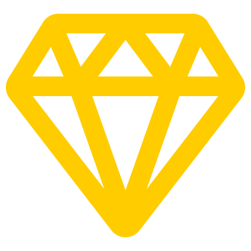

<ion-header>
  <ion-toolbar mode='ios' color="primary">

    <div class="backButton" (click)="goToBack()">
      <ion-icon name="arrow-back-outline"></ion-icon>
    </div>

    <ion-title>{{exercise.tt_exercicio}}</ion-title>

    <div slot="end" class="userPoints">
      
      (points)
    </div>
  </ion-toolbar>
</ion-header>

<ion-content color="primary">

  <!-- <div class="code">
    <ion-text>
      
      <span class="phpOpenAndClose">{{beginCode}}</span>
      
      <ion-item lines="none" color="medium" class="codeLines" *ngFor="let code of codeContent">
    
        <span class="codeContent">{{code.line}}</span>

      </ion-item>
    
      <span class="phpOpenAndClose">{{endCode}}</span>
    
    </ion-text>
  </div> -->

  <div class="enunciated">
    <ion-text>
      {{exercise.ds_exercicio}}
    </ion-text>
  </div>

  <div>
      <ion-radio-group>

        <ion-item class="alternative" mode='md' *ngFor="let alternative of optionsText">
          <ion-label>{{alternative.ds_alternativa}}</ion-label>
          <ion-radio slot="start" [value]="alternative.id_alternativa"></ion-radio>
        </ion-item>
    
      </ion-radio-group>
  </div>

</ion-content>
